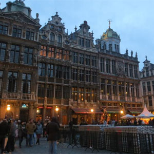
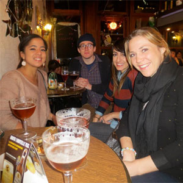
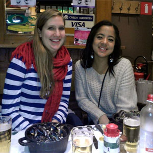

An American in Paris
Brussels, Belgium
Brussels was a very cool city because Belgium has three official languages: French, German, and Dutch. Therefore, it is very diverse, and the diversity spreads to it's history, art, and culture as well. My favorite part about Brussels was of course the beer, cheese, and chocolate.
|
 Brussels Centeral Square, Grand Place.  Enjoying traditional Belgian cheese and beer in an old pub in Grand Place. |
 Eating mussels in Brussels at the famous, Chez Leon restaurant. |